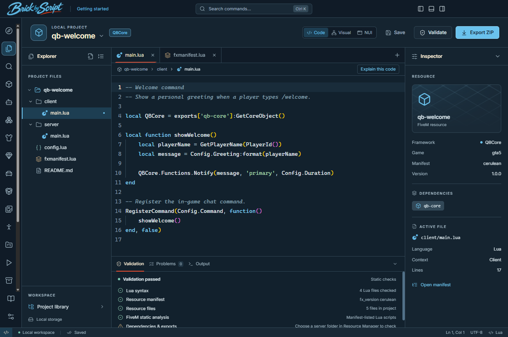

Start in Script Studio
Edit your first chat command, move into the editor and understand what validation checks.


Make one command work in practice#
- Open Home → Make a chat command.
- In
client/commands.lua, find the greeting insideCityChat. Replace the words between the quotes and leave the quotes and parentheses in place. - Enter
/helloin the simulated chat. - Follow the next step to rename the command to
welcome, then try/welcome.
Expected result: the simulated chat displays your message. In Lua, the command name is written without its leading slash; in chat, enter the slash. Use Show hint if you lose your place.
Explore the resource files#
Choose Open in editor when you are ready to inspect the complete resource. Your guided practice draft remains on Home.
A resource is a named folder that FiveM can start. Its fxmanifest.lua declares what it loads. Client files run for players, server files run on the server, and configuration files hold values the resource uses.
For a fresh starter, choose Home → New project → Script resource (or use the New resource command) and choose a framework that matches your server. A QBCore starter depends on QBCore; it does not become standalone because you renamed the project. Save your changes with Ctrl+S.
Add a file from your computer#
- In Script Studio’s Explorer, choose New file… from the file or folder menu to open Add resource file.
- Select Browse files…. Use the Windows file picker to search your folders and choose an existing UTF-8 text file, such as a Lua script, JSON configuration or HTML page.
- Review File path. This is the destination inside your project, such as
client/garage.lua. You can change it before adding the file. Starting from a folder keeps that folder as the destination prefix. - Select Add file, review the imported text and save with Ctrl+S.
The app copies the selected text into the project. It does not move or modify the original file, and it refuses to overwrite an existing project path. Cancelling the Windows picker keeps the dialog’s current selection. Choose Use empty file to create a blank file instead.
Browsing supports text files; it is not a binary model, image or texture importer. Use the appropriate studio for those assets. Imported Unicode text, a UTF-8 byte-order mark when present, and line endings are retained. Add scripts to fxmanifest.lua when they should run, then validate the resource.
Rename, move, copy or remove a file#
- In Script Studio’s Explorer, open the three-dot action button beside a file or folder, or right-click its row.
- Choose Rename or move…, Duplicate… or Remove…. You can also focus a row and press F2 for rename/move, or Delete to open removal confirmation.
- For a move or copy, enter the complete destination path, such as
client/garage.lua. A folder action includes its text files. - Review the result and save with Ctrl+S.
Conflicting or invalid paths are rejected without a partial change. Keep fxmanifest.lua at the resource root. These controls manage stored text files; imported binary assets remain managed by their studio.
Before removal, Studio saves a recovery checkpoint. Use Restore removed files in Explorer to bring back the most recent removal during the current session. After restarting, use Project recovery to restore a checkpoint as a separate project.
Review fxmanifest.lua, require/dofile paths and any HTML or CSS references after moving or removing files. Studio does not guess how to rewrite these references. Add copied files to the manifest when they should run or stream, then validate again.
Right-click and keep your files close#
In 0.19.1, right-click inside the code editor for Cut, Copy and Paste. Ordinary editable text fields also offer native editing commands, with unavailable actions disabled. Selecting readable text outside an input offers Copy and Select all.
Right-click a file or folder in Explorer for its actions, including New file… in that location and Copy relative path. The three-dot button gives you the same options without right-clicking. On a focused row, Shift+F10 or the keyboard Menu key opens the menu. Use arrow keys to choose an action, Enter to run it and Escape to dismiss it.
- Ctrl+W closes the active file tab. Middle-click a tab to close that tab.
- Ctrl+Shift+T reopens the most recently closed file tab in the current project.
- Ctrl+Tab and Ctrl+Shift+Tab move between open file tabs.
- Right-click a tab to close other tabs, tabs to its right or all tabs, or to copy its relative path.
Closing a tab does not delete its file or discard its unsaved text. Closed-tab history belongs to the current project and app session; opening a different project clears it. Save the project before leaving or closing the app.
Validate before exporting#
- Choose Validate or press F5.
- Read the reported problems. Select an item to open the relevant location.
- Correct syntax and manifest-path errors, then validate again.
- Choose Export ZIP when the resource is ready for a development-server test.
Validation checks syntax, manifest references, execution side and common script problems. It cannot prove gameplay behavior or that a remote server has every dependency. See Export basics for the next boundary.
A small standalone example#
For a separate practice resource, create a folder named brick-hello. Add this fxmanifest.lua at its top level:
fx_version 'cerulean'
game 'gta5'
client_script 'client/main.lua'
dependency 'chat'Create client/main.lua inside that folder:
RegisterCommand('hello', function()
TriggerEvent('chat:addMessage', {
args = { 'Brick by Script', 'Hello from my first resource!' }
})
end, false)This example uses FiveM's chat resource and needs it running. It is separate from the guided simulator's CityChat helper. Start the resource on your development server and enter /hello in game to check the message.
Explore visual logic and interfaces#
The resource guide also covers Visual → Use starter flow and NUI → Use menu starter. Visual tools generate Lua; NUI tools build a game interface using web content. Their previews use sample data, so test the exported resource in FiveM.
For the underlying chat event, use the official FiveM chat:addMessage reference.
Move through dialogs and commands#
Press Ctrl+K to open the command palette and start typing. Use Up/Down to select a matching command and Enter to run it. In 0.19.3, keyboard selection scrolls into view, including when you wrap from the first command to the last.
Dialogs place focus in their intended input after opening. Project-library search is ready for typing after its first load, unless you have already focused another control. Refreshing the library does not pull focus away from your choice.
While a dialog such as Rename is open, global project shortcuts such as Ctrl+N stay blocked. Finish or dismiss the dialog before starting another project action. Escape closes a dismissible dialog; it does not cancel an operation that must finish safely.
Resume your work and navigate files#
In 0.19.2, each project remembers open tabs, the active file, selection/cursor and editor scroll, plus its last project workspace. Closing all tabs keeps them closed when you return. Renamed files retain their remembered positions; missing files are ignored. The settings are local to this app profile, bounded to 24 recent projects, and do not travel with backups or cloud copies. Undo and closed-tab history remain session-only.
- Up/Down: focus the previous/next visible Explorer row.
- Right: expand a folder or enter it. Left: collapse a folder or focus its parent.
- Home/End: first/last visible row. Enter: open a file or toggle a folder.
- Type a visible file or folder name prefix to jump to it. Shift+F10 opens its actions.
Ctrl+Shift+F searches file names and text. Use Next results and Previous results to move through pages of up to 100 matches. An empty search explains how to try again.